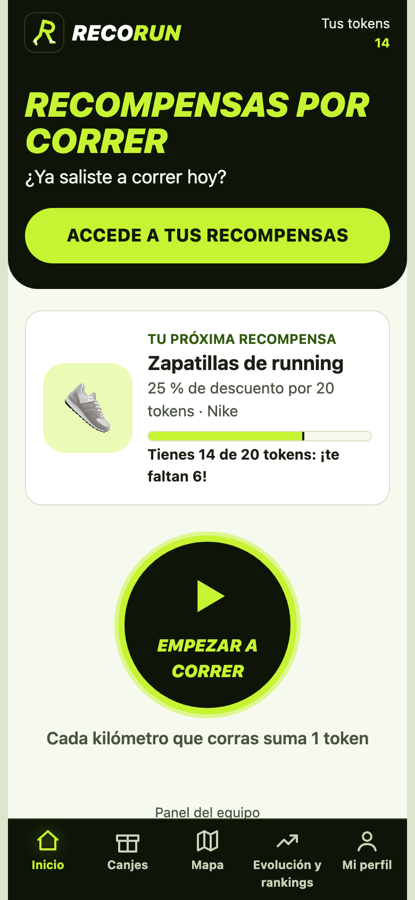

A muchos runners les cuesta mantener la constancia y…

Os contamos algo que nos pasó: Porque nos interesa promover la vida healthy. (pausa) ¿A cuántos os ha pasado?
El problema
El calor, la pereza y la falta de tiempo por trabajo cortan la constancia
☀️El calor
😴La pereza
💼Falta de tiempo por trabajo
Fuente: entrevistas y encuestas del equipo (E1, P1, P2)
Lo que nos contaron: El calor, la pereza y la falta de tiempo por trabajo cortan la constancia (E1, P1, P2); Recompensas que no se pueden gastar, no sirven o no se sabe cómo usar. Hoy lo resuelven con aplicaciones de running o clubes de running, y no les basta.
Nuestro insight
Lo que frena no es correr, sino empezar: las ganas llegan una vez fuera
Antes de salir, el calor, el trabajo o la pereza pesan más.
Nuestro insight: El esfuerzo que frena no es correr sino empezar: las ganas llegan una vez fuera, pero antes de salir el calor, el trabajo o la pereza pesan más
RecoRun
RecoRun · demo en vivo
Cada kilómetro que corres suma 1 token para canjear en comercios.
RecoRun: Ganar recompensas por correr. El cliente gana recompensas en productos por cada kilometro que corre. Estas recompensas son tokens que se pueden gastar en diferentes tiendas y locales. Os lo enseñamos en directo. (DEMO)
Validación
Lo que nos dicen los datos
Encuesta (n = 12, datos de práctica): H1: sobre el papel se supera el 35 %, pero con 4 personas. H2: se entiende y gusta, pero cuesta creer que se pueda canjear de verdad en comercios cercanos. H3: las tiendas no aparecen como canal de descubrimiento en esta muestra. En el test con usuarios vimos 3 problemas de uso; los más graves los hemos corregido en esta versión. H1 · Nuestro cliente son corredores habituales → nc. H2 · Les convence ganar recompensas canjeables por correr → nc. H3 · Llegaremos a ellos por tiendas y locales asociados → nc.
Modelo de negocio
Comisión por ventas en comercios asociados y promociones de marcas
🏃El corredor canjea sus tokensPaga lo mismo de siempre
→
🏪El comercio recibe un clientePaga una comisión o un fijo por lead
→
🤝Las marcas patrocinanAlianzas y promociones
Cómo ganamos dinero: Comisión por ventas generadas en comercios asociados. Alianzas comerciales y promociones patrocinadas de marcas; Se le cobra a los comercios un dinero fijo por cada lead que se le deriva. No cambia el precio de lo que el cliente está comprando.
Decisión
Iteramos: no se puede concluir que los habituales descargarían la app
Sobre el papel se supera el 35 %, pero con 4 personas. Y el perfil mayoritario es el esporádico, no el habitual.
Iteramos. No se puede concluir que los habituales descargarían la app. No se puede concluir que la recompensa haga salir más.
RecoRun
Escanead el QR y probadlo
Ganar recompensas por correr
nicolasgagof.github.io/ed-equipo-3
Probad RecoRun ahora: escanead el QR. Ganar recompensas por correr.
 RecoRun
RecoRun